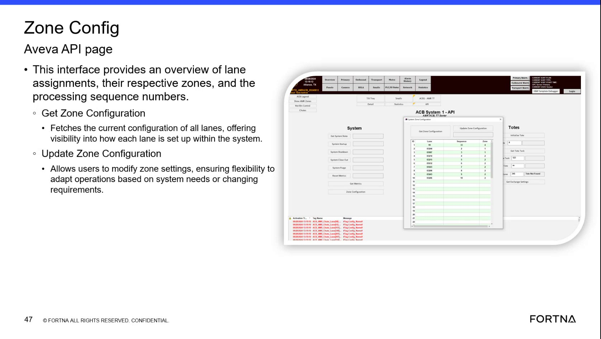

| Procedure ID | proc_interpret_lane_assignment_zone_and_processing_sequence_information_on_the_zone_config_screen_v1 |
|---|---|
| Title | Interpret Lane Assignment, Zone, and Processing Sequence Information on the Zone Config Screen |
| Procedure Type | reference |
| Primary Role | L1_support |
| Support Safe | Yes |
| Validation Status | needs_sme_review |
| Merge Status | source_finalized |
Use the Zone Config Aveva API page to identify and interpret the displayed lane assignment, zone, and processing sequence information for each lane based only on what the source describes and shows.
Use when reviewing the Zone Config Aveva API page to understand how lane assignments, their respective zones, and processing sequence numbers are presented for each lane.
Responsible role: L1_support
Instruction:
Open the Zone Config Aveva API page and confirm you are viewing the page described by the source.
Expected result:
The Zone Config Aveva API page is visible.
Screens / Images:

Stop or Escalate If:
Responsible role: L1_support
Instruction:
Review the Zone Config Aveva API page and identify the lane assignment information shown for each lane.
Expected result:
Lane assignment information can be located on the page for review.
Screens / Images:
Stop or Escalate If:
Responsible role: L1_support
Instruction:
Identify the corresponding zone shown for each lane on the Zone Config Aveva API page.
Expected result:
Zone information corresponding to each lane can be located on the page.
Screens / Images:
Stop or Escalate If:
Responsible role: L1_support
Instruction:
Identify the processing sequence number shown with the lane configuration on the Zone Config Aveva API page.
Expected result:
The processing sequence number displayed with the lane configuration can be located.
Screens / Images:
Stop or Escalate If:
Responsible role: L1_support
Instruction:
Verify or record the displayed relationship between lane assignment, zone, and processing sequence number using only the values presented on the page.
Expected result:
The displayed relationship between lane assignment, zone, and processing sequence number is confirmed or recorded without adding unsupported interpretation.
Screens / Images:
Stop or Escalate If: